Córtex Estudos · 4º Semestre · Anato Pato II · Aula 06
Dermatopatologia
Da histologia da epiderme ao carcinoma de células escamosas, passando pelas lesões fundamentais, pelo vocabulário microscópico do laudo, pelas dermatites agudas e crônicas, pelos pênfigos, pelos nevos e pelo melanoma. O fio condutor da aula: toda lesão que se vê na pele tem uma tradução microscópica — e quem sabe fazer essa ponte descreve, encaminha e lê laudo como gente grande.
1 · A pele normal: funções, camadas e células
A pele é o maior órgão do corpo — um conjunto de tecidos que funciona como a primeira barreira entre o meio interno e o exterior. Quando uma doença se instala, o que se perde são justamente essas funções:
- Barreira seletiva — não é impermeável de verdade, mas controla a passagem e mantém o líquido dentro dos tecidos.
- Defesa imune — citocinas, apresentação de antígenos e células linfoides. Exemplo da aula: a bijuteria "de origem duvidosa" que inflama a orelha — quem reconhece o metal são as células de Langerhans (dendríticas) da epiderme, que chamam os linfócitos da derme.
- Papel endócrino — síntese de vitamina D por fotoativação nos queratinócitos ("15 minutinhos de sol").
- Órgão sensorial e controle de temperatura (glândulas exócrinas).
Pele fina, pele grossa, escalpo
- O que muda a espessura é o número de camadas de queratinócitos. Na pálpebra há só duas camadinhas — por isso dá para ver os vasos por transparência.
- Na região palmoplantar a epiderme é espessíssima: mais camadas → mais queratina → menos sensibilidade.
- O escalpo (couro cabeludo) é pele rica em anexos; outras regiões têm bem menos glândulas sebáceas e sudoríparas.
Fototipo: o que dá cor à pele
A escala de Fitzpatrick classifica a pele em 6 fototipos (I = mais clara, VI = mais escura) conforme a resposta ao sol. O ponto conceitual: os melanócitos ocupam ~5% da epiderme em todas as pessoas — o que muda entre os fototipos é a quantidade de melanina produzida, não o número de melanócitos. E a melanina é diretamente proporcional à proteção contra a radiação UV: pele clara (leucoderma) produz pouca melanina, queima mais e acumula mais dano.
As camadas: epiderme, derme, hipoderme
- Epiderme — epitélio estratificado pavimentoso queratinizado. É avascular.
- Derme — conjuntivo com os vasos, os nervos e a base dos anexos. Dividida em derme papilar (superficial, dentro das papilas) e derme reticular (profunda, rica em fibras colágenas).
- Hipoderme = subcutâneo = panículo adiposo. A inflamação dessa porção profunda chama-se paniculite.
🎯 Por que "dermatite" e não "epidermite"?
Porque a epiderme é avascular — não existe resposta inflamatória dentro dela. Toda reação vascular (equimose, urticária, eritema) acontece na derme, e a epiderme só "mostra" por transparência. Daí o nome das doenças inflamatórias da pele: dermatites.
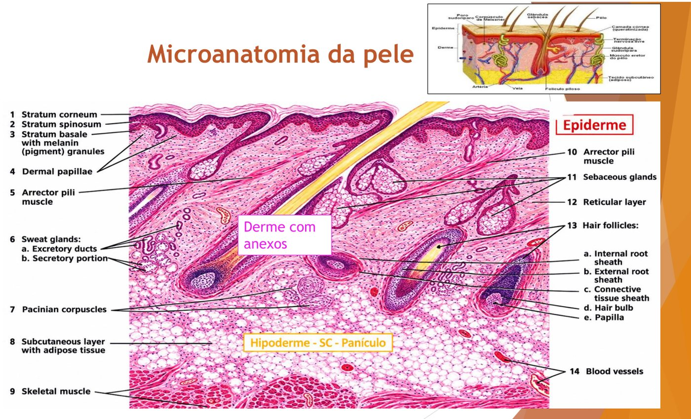
Os terços da epiderme (é assim que o laudo se localiza)
Da base para a superfície — renovação completa em 2 a 4 semanas
- 1Terço basal — camada de células-tronco (queratinócitos basais) + melanócitos + células de Merkel.
- 2Terço intermediário (espinhoso) — queratinócitos amadurecendo. Laudos antigos ainda chamam de camada de Malpighi.
- 3Terço superficial — camada granulosa (grânulos de querato-hialina) + camada lúcida + camada córnea. É o terço que diferencia a pele (queratinizada) do esôfago (não queratinizado — tem terço superior, mas sem camada córnea).
- A camada córnea = queratinócitos mortos, sem núcleo (as "células fantasmas"), + a queratina produzida pelos queratinócitos maduros. O queratinócito nasce na basal como célula-tronco, amadurece subindo e morre em cima — trocamos de pele "de mês em mês".
- Proliferação aumentada (hiperplasia) → mais queratinócitos → espessa a granulosa e a córnea. Proliferação reduzida (ex.: idoso) → pele mais fina (de 15 camadas para 7, por exemplo).
As células da epiderme
| Célula | Proporção / local | Função |
|---|---|---|
| Queratinócito | ~90% · todas as camadas | junções intercelulares potentes (desmossomos); produz queratina e citocinas; célula lábil |
| Melanócito | ~5% · camada basal | produz melanina; os prolongamentos levam os melanossomos e depositam a melanina sobre os queratinócitos (proteção UV) |
| Célula de Langerhans | entre os queratinócitos | dendrítica: primeira a reconhecer o antígeno e apresentá-lo aos linfócitos |
| Célula de Merkel | camada basal | mecanorreceptora/neuroendócrina — "conversa" com as terminações nervosas (a epiderme não tem tecido neural) |
| Linfócitos | derme subjacente | T ativados nos linfonodos regionais voltam para a derme |
🎯 A proporção que o patologista conta: 1 melanócito para 6–10 queratinócitos
No maior aumento, a camada basal normal alterna: queratinócito, queratinócito, queratinócito… melanócito. Se o patologista encontra melanócitos colados um no outro (melanócito, melanócito, melanócito), isso já é alteração — o começo do raciocínio dos nevos e do melanoma (tópicos 9–11). Detalhe do slide: cada melanócito se comunica com ~36 queratinócitos.
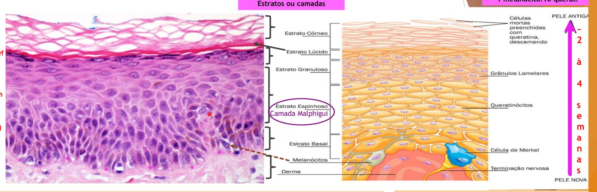
Crista epidérmica e papila dérmica
A junção dermoepidérmica (JDE) não é reta: se fosse, a pele não dobraria. Ela é um encaixe "em sanfona" entre cristas epidérmicas (que descem) e papilas dérmicas (que sobem). Esses termos aparecem no laudo justamente quando estão alterados — retificados na acantose, alongados na psoríase, multiplicados no papiloma.
2 · Lesões fundamentais: a língua do encaminhamento
Na vida real, o diagnóstico nem sempre é de quem atende primeiro: o generalista descreve e encaminha ao especialista. Por isso a aula insistiu na comunicação interprofissional — uma descrição universal, que permita ao próximo colega perceber se a lesão mudou entre um atendimento e outro. Nunca mais "paciente relata pereba" ou "bolota debaixo do braço".
| Lesão | Definição | O que pensar |
|---|---|---|
| Mácula | sem relevo, até ~5 mm (quase puntiforme) | alteração só de cor (ex.: vasodilatação local vista por transparência) |
| Mancha / patch | plana, acima de ~5 mm | a mesma mácula, maior |
| Placa | elevação achatada, acima de 5 mm, delimitada | exige complemento de cor: acastanhada, enegrecida, leucoplásica, eritematosa |
| Pápula | elevação arredondada sólida, até 5 mm | semicircular, sem líquido |
| Vesícula | elevação com líquido, até 5 mm | acima de 5 mm vira bolha |
| Pústula | elevação preenchida por pus (amarelada, cor de mel) | pensar em agente piogênico |
| Crosta | massa seca de sangue, pus, soro ou restos celulares | a "casquinha" depois que a vesícula/bolha drena |
| Erosão / escoriação | solução de continuidade superficial (incompleta) | escoriação = linear ("arranhão de gato") |
| Úlcera | perda total do tecido cutâneo, expõe a derme | perda de barreira (ex.: úlcera de decúbito) |
| Nódulo | elevação esférica, acima de 5 mm, sólida | descrever base, crescimento, mobilidade, superfície, lobulação, tamanho |
| Cisto | cavidade patológica com líquido, revestida por epitélio | na palpação pode parecer nódulo — mas nódulo é sólido |
| Escama | excrescência seca e dura: cornificação imperfeita | escamas extensas = placa liquenoide (líquen, psoríase) |
| Onicólise | separação entre a placa ungueal e o leito | presente em ~30% das psoríases |
| Papiloma | projeções digitiformes/papilíferas acima da superfície | muitas papilas juntas; típico do HPV (verruga) |
Como descrever um nódulo
- Base: séssil (base maior que o diâmetro do nódulo) × pedunculada/pediculada (base menor que o nódulo).
- Crescimento: exofítico (para fora) × endofítico (para dentro, "submucoso").
- Mobilidade: móvel (anda quando manipulado) × fixo (arrasta o tecido em volta) — sinal diferencial importante.
- Superfície: lisa/homogênea × irregular; consistência (macia, fibroelástica, pétrea); lobulado ou não; tamanho (maior diâmetro).
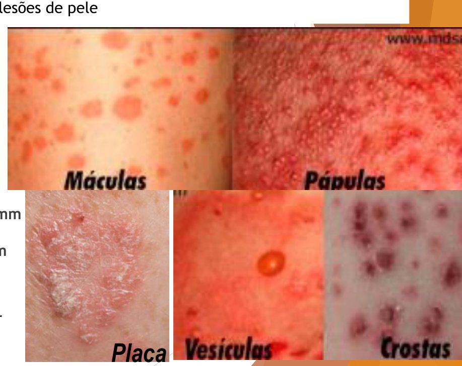
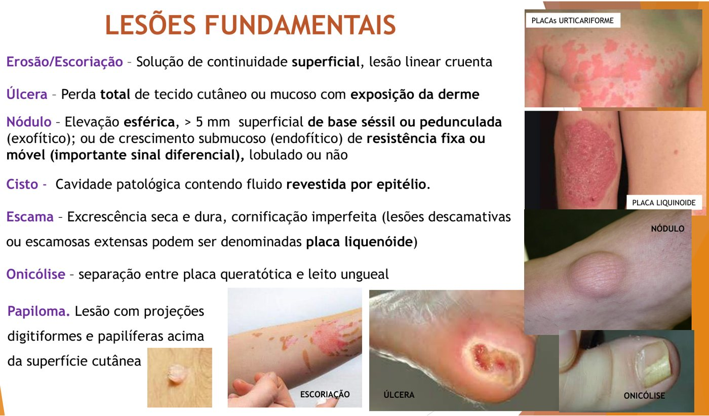
O exercício da aula: descrever para encaminhar
O modelo de frase: "Em [topografia precisa], apresenta [lesão fundamental] + [características]" — e, ao final, "solicito avaliação + conduta da especialidade". A topografia tem que ser fina (terço proximal, face posterior, lado), porque o colega precisa saber se a lesão migrou ou cresceu em três meses. Se é nódulo, não precisa dizer "sólido": é pressuposto.
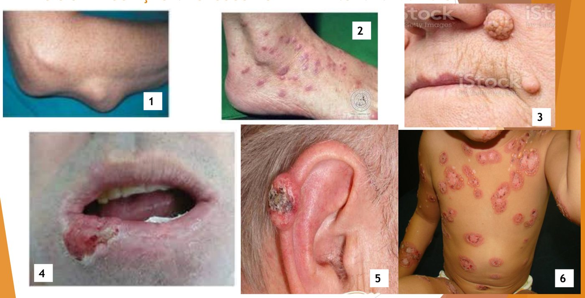
| Lesão | Descrição que a aula validou |
|---|---|
| 1 | Em braço, face posterior, terço proximal: nódulo de base séssil, ~3–5 cm no maior diâmetro (sempre medir), de resistência fixa e lobulado (há uma divisão — não é nódulo único). |
| 2 | Em dorso do pé direito até a região maleolar: múltiplas pápulas eritematosas de tamanhos variados (o grupo descreveu "crostas" — a maioria é pápula: elevação circular sólida; algumas mais secas ficam "no limbo"). |
| 3 | Em pele nasal esquerda, próximo ao sulco nasolabial: nódulo isolado exofítico, normocrômico, aparentemente séssil e mole, de superfície granulosa; adjacente à comissura labial, outro nódulo normocrômico de superfície lisa e base séssil. |
| 4 | Em lábio inferior, próximo à comissura direita: lesão de contornos difusos, borda elevada e crosta — "isso aqui também é carcinoma". |
| 5 | Em pavilhão auricular direito: nódulo bem delimitado com ulceração central recoberta por crosta e bordas eritematosas — três lesões fundamentais numa só descrição. |
| 6 | Em tronco e membros: lesões bolhosas/erosões multiformes, algumas com aspecto em alvo — a mais difícil. Parecia placa, mas placa precisa de tempo para se formar; bolhas rompidas não são placa. Em lesões multiformes, cite a menor e a maior. |
Escolhendo a biópsia pela lesão
- Biópsia excisional — remove a lesão inteira: lesões pequenas e tipicamente benignas. Faz diagnóstico e tratamento ao mesmo tempo.
- Biópsia incisional — remove um pedaço: lesões grandes ou com suspeita de malignidade. Confirma o que é para planejar o tratamento.
- O espécime tem que ir com informação clínica completa e topografia (hoje, até imagem). Quadro polimórfico → mais de uma amostra. E a topografia muda a leitura: uma camada córnea espessa é esperada na planta do pé, mas não na pálpebra.
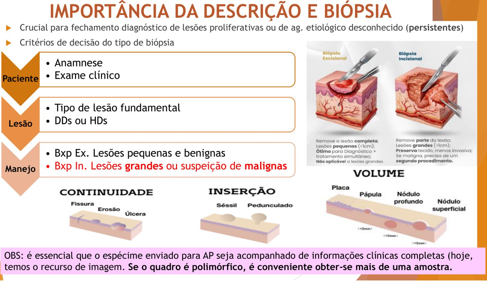
3 · Do clínico ao microscópico: o vocabulário do laudo
Na pele existe correlação direta entre o que se vê e o que o microscópio mostra. São as palavras que mais aparecem em laudo de dermato — e a aula pediu para raciocinar o que está acontecendo por baixo de cada lesão fundamental.
| Termo | O que é | Tradução clínica |
|---|---|---|
| Hiperqueratose | espessamento do estrato córneo | placas, lesões hipocrômicas/leucoplásicas (brancas), escamas |
| Hipergranulose | hiperplasia da camada granulosa | |
| Acantose | espessamento da epiderme (mais queratinócitos); a pele "retifica" e perde as cristas | |
| Papilomatose | elevação por hiperplasia epidérmica com aumento das papilas dérmicas | |
| Degeneração hidrópica | edema intracelular (vacúolos de água no queratinócito) | área eritematosa/eritroplásica, com edema |
| Espongiose | edema intercelular — a epiderme parece esponja | |
| Vacuolização | vacúolos dentro ou ao lado das células | |
| Acantólise | perda das junções intercelulares (desmossomos / desmogleínas) | vesículas e bolhas; a altura da acantólise define a doença |
| Exocitose | células inflamatórias dentro da epiderme | acompanha as dermatites |
| Erosão / úlcera | perda parcial / total da epiderme | erosão / úlcera |
| Disqueratose | queratinização anormal abaixo da granulosa | suspeita de carcinoma (pérolas córneas) |
| Atrofia | redução das células espinhosas, epiderme adelgaçada e retificada | pele fina, mais avermelhada |
- Acantose + fototipo alto → lesão hipercrômica (mais escura que o normal). Lesão amarelada → gordura (macrófagos xantomizados, xantomas). Lesão arroxeada → vasculopatia.
- Degeneração hidrópica e espongiose andam juntas: o edema nunca fica só dentro da célula. Toda degeneração hidrópica é uma vacuolização, mas nem toda vacuolização é hidrópica.
- Exemplo de fechamento: lesão clínica em placa com escamas + laudo com hipergranulose, hiperqueratose e acantose → casou.
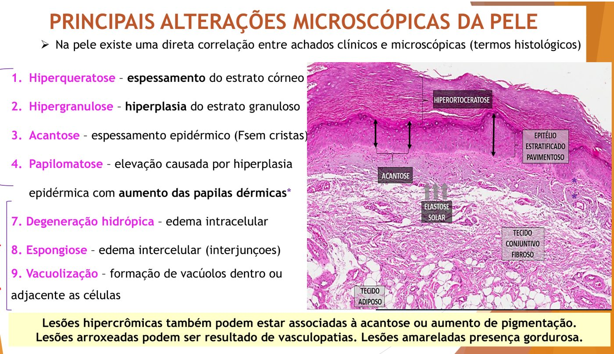
🎯 Disqueratose: "queratina fora do lugar" é coisa de carcinoma
A queratina tem que ser formada no terço superficial. Queratina se formando lá embaixo — ou pior, pérolas córneas na derme — é célula fora de controle: disqueratose acompanha laudos de carcinoma.
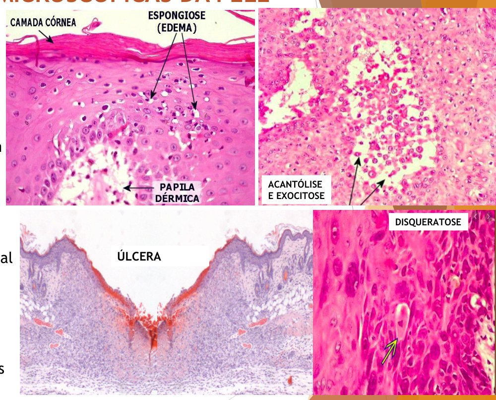
Agudo × crônico: o tempo está escrito na lâmina
- Dermatite costuma designar o processo agudo (a maioria). O crônico ganha o nome de dermatose — ideia de condição: a maioria não tem cura, tem controle.
- Agudo (dias a poucas semanas, autolimitado): fenômenos vasculoexsudativos — espongiose, acantólise, vesículas, bolhas; infiltrado agudo.
- Crônico (meses a anos): fenômenos de formação tecidual — acantose, hiperplasia ou atrofia; infiltrado predominantemente mononuclear. Não dá para espessar a pele em dois dias: a renovação normal já leva ~4 semanas.
- As dermatites/dermatoses são estimadas em 1/3 dos pacientes que buscam atendimento clínico.
⚠️ Leia o laudo com olho crítico
O laudo traz a conclusão do patologista, mas o médico precisa entender a descrição para checar se ela casa com a clínica. Já houve laudo trocado de paciente — quem lê só a última linha não percebe.
4 · Dermatites agudas: eczematosa e eritema multiforme
Dermatite eczematosa (eczema = "ebulição", em grego)
Resposta inflamatória rápida, vascular e exsudativa: acúmulo de líquido intercelular (espongiose) → vesículas → bolhas. É um grande grupo, classificado pelo iniciador:
- Irritativa de contato — externa: dermatite da fralda, sabão em pó.
- Alérgica — bijuteria, látex (o caso da aula: paciente alérgico a látex que esqueceu de avisar e fez bolha durante o atendimento).
- Relacionada a fármacos — degranulação local de mastócitos.
- Atópica — iniciador interno; a mais desafiadora, porque o gatilho é difícil de identificar (estresse, frio, calor…).
Patogenia (igual para todas, inclusive a atópica)
- 1Captação — antígenos de superfície captados pelas células de Langerhans.
- 2Apresentação — para linfócitos T CD4, que se ativam (efetores e de memória) — hipersensibilidade tipo IV.
- 3Amplificação — os queratinócitos liberam citocinas (célula viva, ativa) → resposta local vascular e exsudativa.
- 4Reexposição — o ciclo se repete: nova ativação, migração celular, inflamação (eritema, dor ou prurido nas primeiras 24 h).
- Clínica: lesões papulovesiculares vermelhas e secretivas, na sequência pápula → vesícula/bolha → úlcera → crosta.
- Microscopia: edema intracelular → espongiose → os queratinócitos se enchem e se descolam (acantólise no estrato espinhoso) → exocitose; edema na derme; infiltrado misto (neutrófilos e linfócitos, com linfócitos puxando a resposta).
- Tratamento: identificar e eliminar o agente; corticoide tópico e/ou sistêmico na crise.
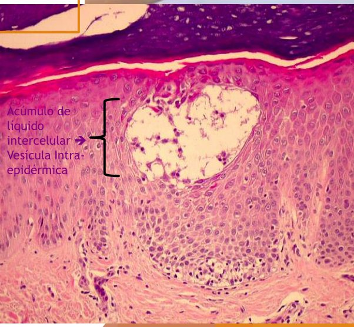
Eritema multiforme
Reação de hipersensibilidade autolimitada com destruição maciça de queratinócitos mediada por linfócitos T citotóxicos — os próprios queratinócitos passam a ser tratados como antígeno.
- Gatilhos: drogas (sulfonamidas, penicilinas, barbitúricos, hidantoínas — "está na bula") e infecções (herpes simples, sobretudo a primoinfecção; Mycoplasma; Histoplasma).
- Qualquer idade (um pouco mais nos extremos), qualquer topografia — mas SIMÉTRICO (braços, laterais do tronco). "Tive só numa mão" → não é eritema multiforme.
- Autolimitado: ~7 dias — por isso é processo agudo; tratamento sintomático.
- Clínica: leque de lesões eritematosas — máculas, pápulas, vesículas, bolhas, placas em anel — e a marca registrada: lesões em alvo (vermelho–claro–vermelho, centro pálido ou erodido).
- Microscopia: infiltrado linfocitário perivascular superficial intenso (os linfócitos desenham o contorno do vaso, na derme), edema, linfócitos ao longo da JDE, apoptose e necrose epidérmica → vesículas, erosão, até úlcera.
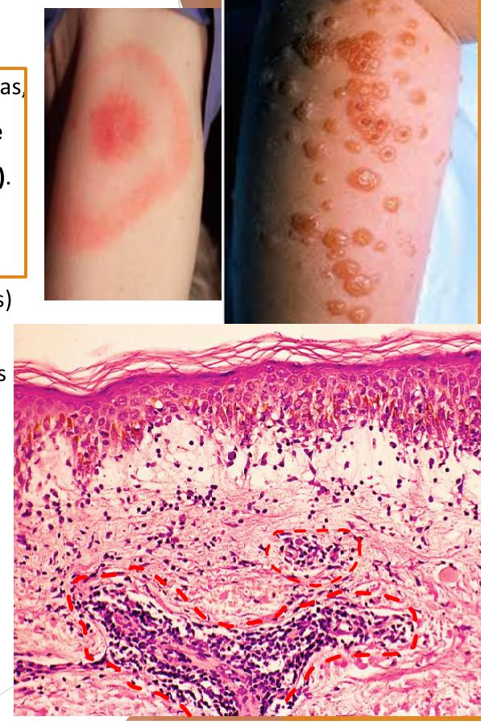
⚠️ Síndrome de Stevens-Johnson ≠ choque anafilático
A SSJ é a forma sistêmica e febril do eritema multiforme: não fica nos braços — acomete o corpo todo, inclusive as mucosas oral e genital. Mais frequente em crianças e imunodeprimidos. É grave porque a destruição de queratinócitos ulcera e a barreira se perde em quase todo o corpo. Tratamento principal: corticoide. É reação de hipersensibilidade, mas não é fulminante como o choque anafilático (e o tratamento não é adrenalina).
5 · Impetigo: a dermatite infecciosa
Há "um milhão" de dermatites infecciosas: virais (herpes simples, herpes-zóster), fúngicas superficiais agudas (tinea — pé de atleta) e micoses crônicas profundas. O exemplo da aula foi o impetigo.
- Staphylococcus aureus — bactéria piogênica (produz pus); transmissão por contato direto ou objetos contaminados; acomete sobretudo a primeira infância.
- O detalhe que amarra tudo: o S. aureus produz uma toxina que cliva a desmogleína 1 → acantólise → vesículas e bolhas superficiais.
- Clínica: máculas eritematosas → vesículas → pústulas (porque é piogênico) → ruptura → crostas cor de mel (melicéricas).
- Microscopia: acúmulo de neutrófilos sob o estrato córneo — bolha subcórnea (a camada córnea "descola" com neutrófilos e bactérias embaixo).
- Tratamento: antibiótico. Ninguém biopsia impetigo — mas, se biopsiasse, seria isto:
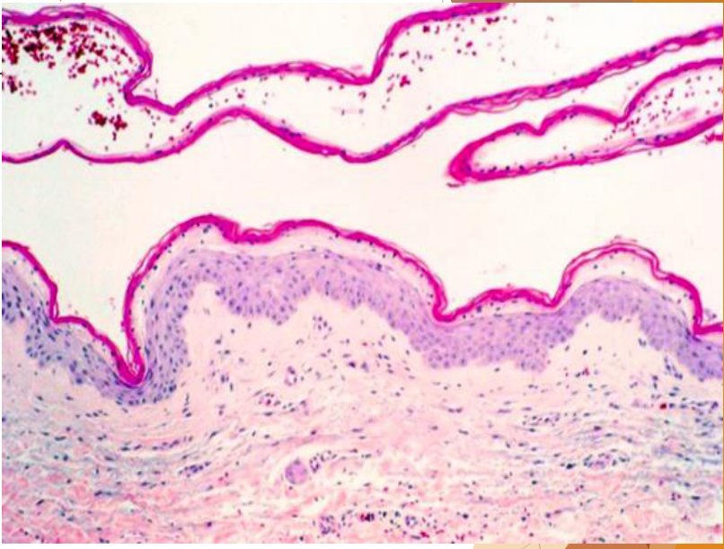
🔗 Guarde a desmogleína 1
O mesmo alvo do impetigo (desmogleína 1, superficial) é o do pênfigo foliáceo — e os dois fazem bolha subcórnea. A diferença é quem ataca: toxina bacteriana × autoanticorpo (tópico 7).
6 · Psoríase: a dermatose crônica-modelo
Do grego psora — palavra usada para sarna. Não tem nada a ver com sarna. É uma desordem crônica de hiperativação imune:
O motor de (quase) toda dermatose crônica
- 1Ativação HLA/MHC — linfócitos T CD4 e CD8 ativam, migram e se acumulam na região.
- 2"Sopa" de citocinas — rica em TNF-α e IFN-γ, que sustentam a inflamação amplificada por muito tempo.
- 3Fatores de crescimento — ativam macrófagos e fibroblastos → formação tecidual.
- 4Hiperproliferação de queratinócitos — acantose e hiperqueratose.
A aula avisou: patogênese detalhada de dermatoses não será cobrada — mas a lógica acima (linfócitos chegando sem parar → citocinas → fatores de crescimento → hiperplasia) vale para a maioria das dermatoses crônicas; o que muda é a célula envolvida ou a presença de necrose.
- Epidemiologia: bem menos frequente que as agudas (~2% no Brasil), qualquer idade, reagudizações frequentes, sem cura — só controle; formas brandas e severas; gatilhos genéticos e ambientais.
- Sistêmica: artralgia, febre, astenia, eritrodermia; associação com outras autoimunes (ex.: LES).
- Topografia: simétrica — cotovelos, joelhos, couro cabeludo, região lombossacral, sulco interglúteo; ± eritrodermia facial; onicólise em ~30%.
- Clínica: placas bem demarcadas, róseas ou cor de salmão, com escamas branco-acinzentadas pouco aderentes que descamam; prurido; no cotovelo, o espessamento dói e limita a flexão. O subtipo mais comum é a psoríase vulgar.
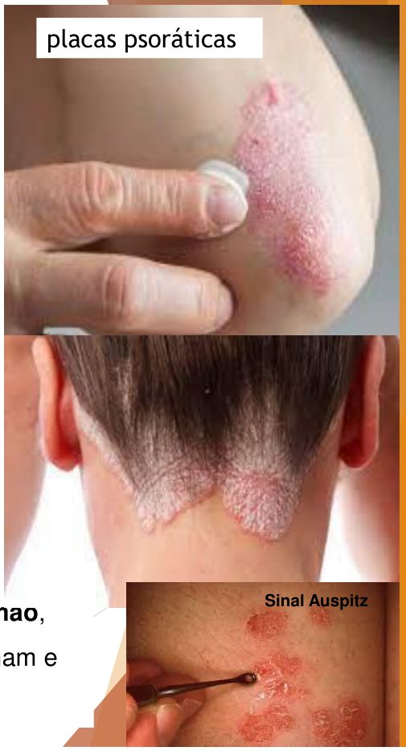
🎯 Sinal de Auspitz — e por que ele existe
Ao remover a escama, aparece um padrão eritematoso puntiforme (pontinhos como petéquias). A psoríase faz; o líquen, que também dá placa escamosa, não faz — é sugestivo, não definitivo (quem bate o martelo é a histopatologia). O porquê está na lâmina: a acantose da psoríase é "em tubo de ensaio". A inflamação crônica empurra a hiperplasia, mas não há substrato (energia, proteína) para sustentar uma hiperplasia uniforme por tanto tempo: a epiderme oscila entre áreas espessadas (cristas alongadas) e áreas atróficas sobre as papilas — onde os vasos dilatados e tortuosos ficam colados na superfície. Arrancou a escama → os capilares das papilas sangram em pontos. Por isso a lesão espessada parece vermelha. O espessamento vem primeiro; a atrofia vem depois.
A microscopia da psoríase (checklist do laudo)
- Acantose com alongamento tubular das cristas epidérmicas ("acantose em tubo de ensaio", padrão psoriasiforme).
- Hipogranulose (nas áreas atróficas há menos granulosa) e hiperparaqueratose.
- Figuras de mitose acima da camada basal — queratinócitos estimulados se dividindo fora do lugar.
- Adelgaçamento da epiderme suprapapilar, com vasos dilatados e tortuosos nas papilas.
- Microabscessos de Munro — agregados de neutrófilos na epiderme. "Abscesso" aqui não significa infecção.
- Infiltrado subepidérmico predominantemente linfocítico (CD4 e CD8) — mononuclear, "você bate o olho: núcleos redondos, basofílicos, ocupando quase toda a célula".
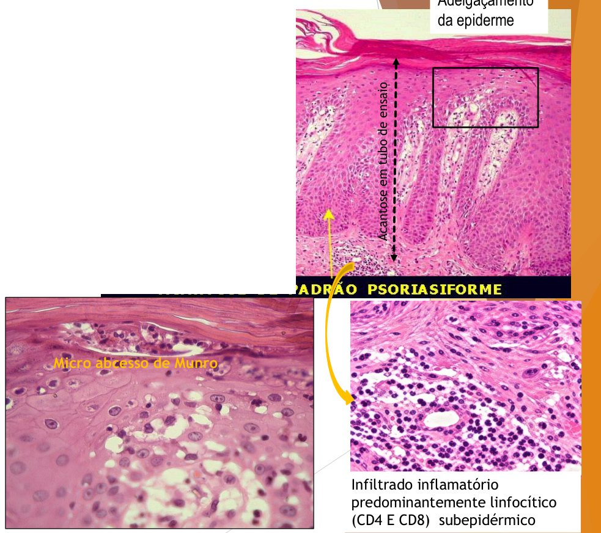
Tratamento: imunossupressores orais (metotrexato), fototerapia e loções tópicas com corticoide.
7 · Doenças bolhosas: pênfigo vulgar × foliáceo
As buloses são um grupo de doenças autoimunes, crônicas, com lesões vesiculobolhosas, causadas por autoanticorpos (IgG) contra proteínas desmossômicas — as desmogleínas. Assim como o estafilococo do impetigo cliva desmogleína, aqui o próprio organismo fabrica anticorpo contra ela. Muitos livros agrupam o pênfigo nas doenças bolhosas, mas ele também é uma dermatose crônica.
- A biópsia é crucial para o diagnóstico.
- Exames complementares: marcadores séricos de doença autoimune, como o FAN (fator antinuclear) — se há anticorpo contra componente do núcleo (que nem deveria ser "visto"), alguma célula está sofrendo um processo em que sua proteína nuclear está sendo reconhecida. É inespecífico, mas altamente sugestivo de autoimunidade. A imunofluorescência identifica a IgG anti-desmogleína; o sinal de Nikolsky ajuda no diferencial.
- Pênfigos: mais comuns entre a 4ª e a 6ª década, homens e mulheres.
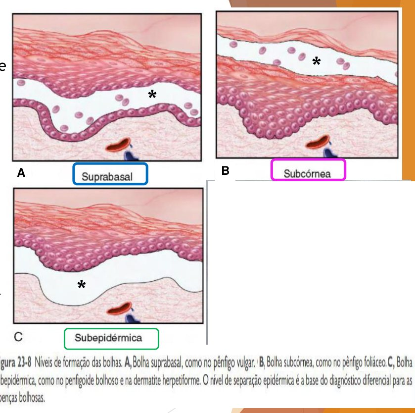
| Pênfigo vulgar | Pênfigo foliáceo | |
|---|---|---|
| Frequência | o principal: ~80% dos casos | endêmico na América do Sul — Brasil, sobretudo a região Norte |
| Alvo | IgG anti-desmogleína 3 (terço basal) | IgG anti-desmogleína 1 (porção superficial) |
| Altura da acantólise | SUPRABASAL — fica a basal, o resto sobe | SUBCÓRNEA — sai só a camada córnea |
| A bolha | teto grosso (epiderme quase inteira): mais resistente, demora a romper | teto finíssimo: estoura rápido — difícil ver a bolha íntegra |
| Ao romper | praticamente úlcera | erosões, crostas, pele vermelha — "fogo selvagem" |
| Distribuição | corpo todo: face, axila, virilha, pontos de pressão e mucosa — a bucal é a primeira | mais localizado e "mais para cima": couro cabeludo, face, tórax |
| Gravidade / infiltrado | pode ser fatal; infiltrado misto intenso | lesões delicadas; infiltrado mononuclear ou misto, exocitose |
🎯 "Qual bolha resiste mais?" — a pergunta da aula
A suprabasal (vulgar): toda a "casquinha" da epiderme segura o líquido. O relato da aula: uma paciente com pênfigo vulgar com bolhas de ~10×10 cm no corpo todo — ela virava de decúbito em cima das bolhas, como se fossem colchões d'água, e elas não rompiam. Já a bolha subcórnea (foliáceo) estoura logo e deixa a pele em carne viva superficial — erosões dolorosas, daí "fogo selvagem". A explicação molecular é uma só: cada pênfigo ataca uma desmogleína diferente, que mora numa altura diferente da epiderme.
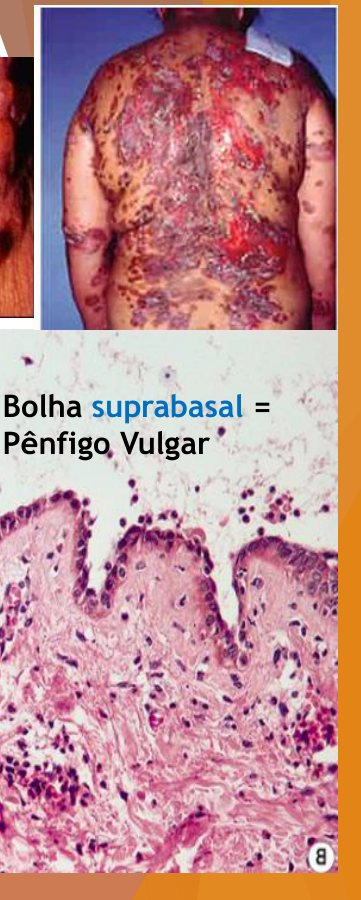
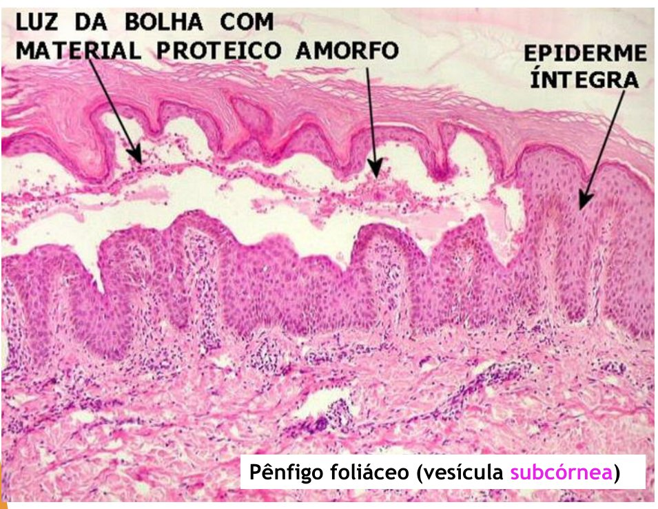
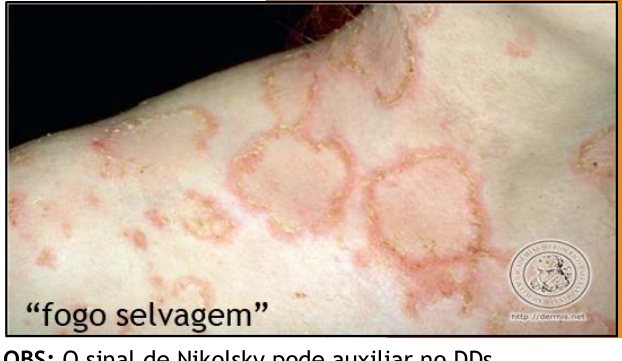
- Tratamento dos dois: imunossupressores — o paciente é imunossuprimido para parar de reconhecer as próprias desmogleínas.
- Curiosidades citadas: o penfigoide bolhoso (mais comum que o pênfigo, mais em idosos) destrói hemidesmossomos e faz bolha subepidérmica — perde a epiderme inteira, mas costuma ser mais localizado. A epidermólise bolhosa é genética (genodermatose — as "crianças borboleta"): a pessoa não fabrica uma das proteínas de junção.
8 · Neoplasias benignas: pólipo fibroepitelial e acantose nigricans
Se a maioria das patologias de pele envolve a epiderme, a maioria das neoplasias de pele também é epidérmica (há tumores dérmicos e hipodérmicos, menos comuns). Alguns tumores benignos fazem diagnóstico diferencial entre si ou com malignos — daí a importância da descrição, da dermatoscopia e da biópsia; e alguns são marcadores de síndromes.
Pólipo fibroepitelial (acrocórdon)
- Não é verruga: a verruga é verruciforme/papilomatosa e ligada ao HPV (poderia até entrar nas infecciosas). O pólipo é liso.
- O nome conta a história: proliferou o epitélio (epiderme), que "arrasta" o conjuntivo (fibro) de baixo para se nutrir.
- Tumor benigno, geralmente esporádico (há famílias com muitos), assintomático — achado incidental; frequente em idosos e meia-idade (acúmulo de mutações, envelhecimento). Pode sangrar quando arrancado na troca de roupa.
- Associado a processos reativos e endócrinos: gestação, síndrome metabólica, polipose intestinal.
- Áreas: pescoço, tronco, face, regiões intertriginosas (dobras).
- Macro: tumor exofítico, nodular, pedunculado/pediculado (ou não), normocrômico ou hipercrômico, liso (às vezes rugoso), bem delimitado, consistência macia/fibroelástica. Nódulo pétreo não é pólipo fibroepitelial.
- Micro: projeção epidérmica com eixo fibrovascular, revestida por epitélio escamoso benigno hiperplasiado (pode espessar pelo atrito), sem atipia. Malignizar é raríssimo.
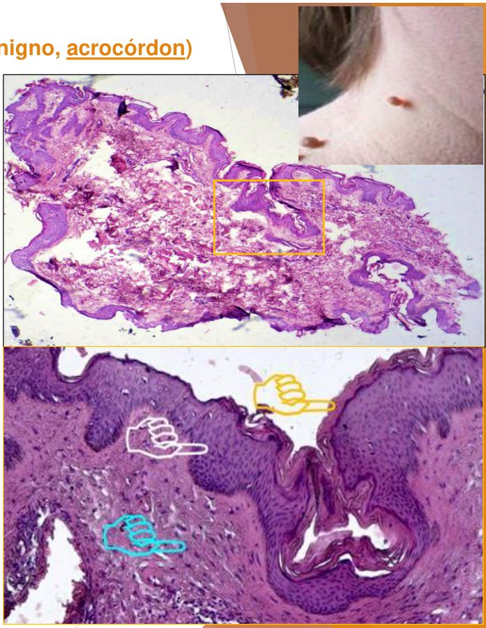
Acantose nigricans
🎯 Neoplasia não precisa ser nódulo
A acantose nigricans — o "pescoço/sovaco preto" que se associa ao diabetes — é, no conceito, uma neoplasia. Neoplasia pode aparecer como mancha ou como úlcera, não só como tumor.
- Patogenia: aumento da sinalização de fatores de crescimento das células da pele (não são os proto-oncogenes mutados diretamente) → proliferação de queratinócitos.
- Por que escurece? Com mais queratinócitos, os melanócitos ficam mais próximos — aumenta a densidade, não há hiperplasia melanocítica. Parece haver mais melanina depositada.
- Áreas flexurais: axilas, pescoço, virilha (mais evidente em fototipos não claros).
- Marcador cutâneo: de condições benignas (~80%) — obesidade, resistência insulínica, diabetes — e também de malignas: pode ser síndrome paraneoplásica.
- Macro: mancha hipercrômica/enegrecida, grande, de contornos difusos, superfície aveludada, assintomática.
- Micro: cristas e papilas aumentadas e onduladas (saliências e depressões repetitivas), hiperplasia variável, hiperqueratose, hipermelanose basal sem hiperplasia melanocítica.
- Tratamento: regulação endócrina. Dá para tratar esteticamente, mas sem corrigir o metabolismo a lesão volta.
⚠️ Acantose nigricans sem distúrbio metabólico
Paciente com perfil endocrinológico normal, sem síndrome metabólica, e com acantose nigricans → investigar neoplasia maligna: pode ser manifestação paraneoplásica (a célula tumoral "funcionando de qualquer jeito", produzindo hormônio/fator de crescimento).
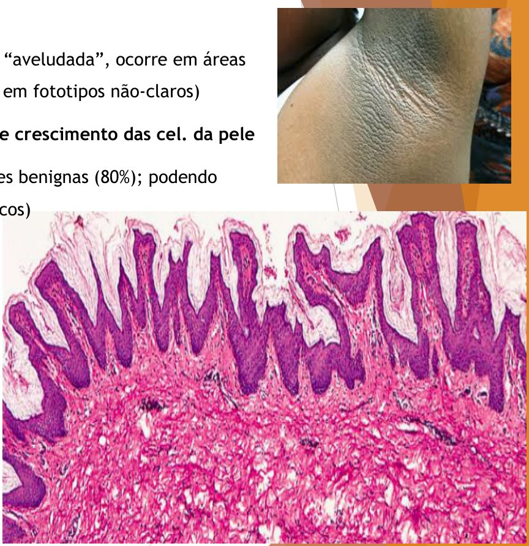
9 · Pigmentação e a progressão de Clark
Distúrbios de pigmentação (citados)
- Melasma: hipermelanose focal sem hiperplasia melanocítica — mais melanina, mesmo número de melanócitos. Áreas expostas ao sol, sobretudo a face; mais comum em mulheres; semelhante às efélides (sardas).
- Vitiligo: acromia adquirida por reação imune contra os melanócitos: sem melanócito, sem melanina — a área fica branca. Começa localizado e pode generalizar. Na lâmina, coloração de Fontana-Masson negativa.
- Lentigo: hiperplasia lentiginosa — aumenta o número de melanócitos (a proporção com os queratinócitos cai), mas não é doença: as manchas acastanhadas "café com leite" nas mãos de idosos de pele clara, em áreas expostas.
A progressão de Clark
Neoplasia benigna costuma ficar benigna e muita maligna já nasce maligna — mas nos distúrbios melanocíticos o patologista Clark descreveu uma progressão. É um funil: de muitos casos, pouquíssimos avançam cada degrau.
Do sol ao melanoma (cada degrau, menos gente)
- 1Hiperplasia lentiginosa — a radiação UV faz os melanócitos proliferarem; só aumenta o número (lentigo).
- 2Nevo juncional — mutações de NRAS e BRAF (proto-oncogenes) → ilhas de melanócitos na camada basal / JDE; clinicamente mácula, sem espessura.
- 3Nevo composto — os melanócitos proliferam a ponto de ganhar volume e entrar na derme: pápula ou nódulo.
- 4Nevo displásico — surge atipia (aumento de tamanho, cariomegalia, pleomorfismo).
- 5Melanoma — neoplasia maligna: crescimento radial (precoce) → vertical (avançado, disseminação dérmica e vascular).
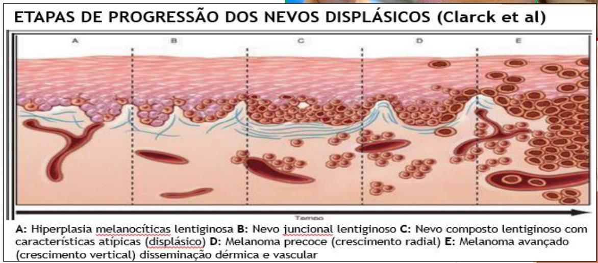
⚠️ O nome engana: "melanoma" é maligno
O sufixo -oma sugere neoplasia benigna, e um nome como "melanocarcinoma" daria melhor ideia — mas melanoma ficou consagrado. É a neoplasia maligna dos melanócitos.
10 · Nevos: melanocítico (juncional e composto) e displásico
Nevo melanocítico (nevo típico — "pintas e sinais")
- Qualquer proliferação neoplásica benigna dos melanócitos. Há congênitos, mas a maioria é adquirida (dano solar cumulativo). Muito comuns, todas as idades.
- Relevância clínica: estética + acompanhamento da possível (rara) progressão.
- Subtipos clínicos: juncional e composto (os da aula), intradérmico, azul (pinta azulada, comum em crianças), Spitz (mais em crianças; mais avermelhado, comum em ruivos), halo (lesão em alvo — halo claro ao redor), congênito.
- Macro: mácula, pápula ou nódulo marrom-acastanhado, plano ou elevado — e o que garante que não há progressão: margens bem definidas, contorno uniforme, pigmentação uniforme (o halo é a exceção da cor).
- Micro: células névicas — o melanócito que sofreu mutação, no laudo, vira "célula névica" — em ninhos ou cordões; pouca ou nenhuma inflamação (neoplasia benigna, sem sintoma).
| Nevo juncional | Nevo composto | |
|---|---|---|
| Clínica | mácula (sem relevo) | pápula ou nódulo (tem volume) |
| Onde estão as células névicas | na junção dermoepidérmica / intraepidérmicas — ninhos arredondados e cordões | na JDE e na derme — crescimento em direção à derme |
| Extras | ausência de inflamação; núcleos típicos | maturação (as profundas ficam fusiformes) + melanófagos/melanóforos (macrófagos que fagocitaram a melanina produzida na derme) |
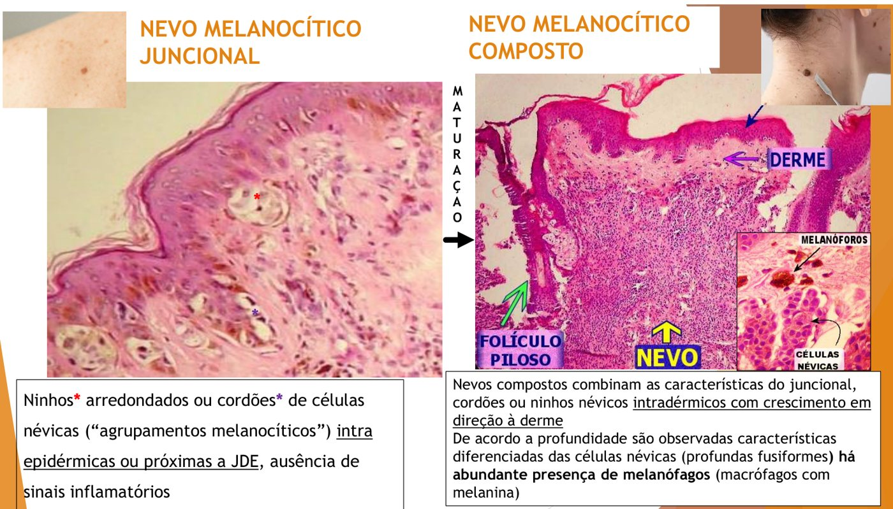
Nevo displásico (nevo atípico)
- Lesão precursora do melanoma — quanto maior o número de nevos displásicos, maior o risco (preditor).
- Além de NRAS e BRAF, acumula outras mutações: CDK4 (ciclina) e TERT (telômero — a célula perde o "marcador de fim" da divisão) + alterações epigenéticas.
- Síndrome do nevo displásico: famílias com centenas de nevos desde a infância; Clark (1978) mostrou que ~50% dos portadores desenvolveriam melanoma aos 60 anos. Já o nevo displásico isolado, em quem não tem a herança, tem risco de progressão muito baixo.
- Diferença: aparece também em áreas não expostas ao sol.
- Macro: maiores que os nevos comuns, pigmentação irregular (vários tons), margens irregulares, área central elevada, pedregosa e escura (aspecto em alvo) — a dermatoscopia mostra bem.
- Micro: melanócitos atípicos (núcleos escuros, irregulares), hiperplasiados e hipertróficos, cordões na epiderme, JDE e derme, infiltrado linfocitário e fibrose linear na derme subjacente. O patologista passa a laudar "nevo displásico", não mais nevo simples.
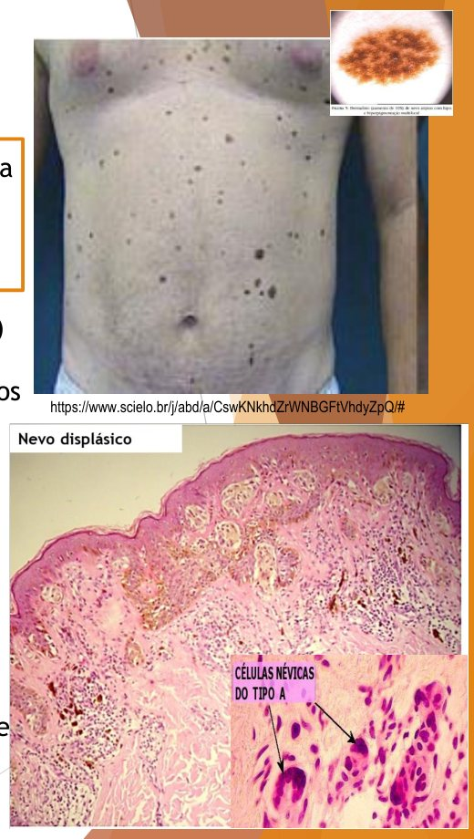
11 · Melanoma: raro, famoso e letal
🎯 A pizza dos cânceres de pele
Numa pizza de 8 fatias representando os cânceres de pele, o melanoma não ocupa nem 1/3 de uma fatia (1–3% dos cânceres de pele; ~4 casos/100.000 habitantes). O resto — "sete pedaços e meio" — são carcinomas (o "câncer de pele não melanoma"), com o basocelular sozinho ocupando cerca de cinco fatias. Mas o melanoma é o mais famoso porque mata (~50% de letalidade), inclusive quem tem acesso a tratamento. O exemplo célebre: um cantor de reggae mundialmente famoso associou uma mancha no dedão do pé a um trauma de futebol — era melanoma, e evoluiu de forma fatal.
- Multifatorial: mutações adquiridas (TERT, PTEN, KIT, CDKN2A); o fator mais relevante é a radiação UV. Menos de 10% são herdados (traço autossômico dominante).
- Nos esporádicos, origem em regiões expostas: dorso superior em homens e pernas em mulheres. Na aula: no homem, dorso e extremidades são mais letais; na mulher, a coxa. Doenças que reduzem a melanina favorecem.
- Subtipos: extensivo superficial (o mais frequente), nodular, lentiginoso acral. Outros sítios: mucosa oral e anogenital, esôfago, meninges, olho.
- Macro: manchas ou nódulos pigmentados, usualmente acima de 6 mm, com variabilidade de cor, tamanho e formato; geralmente assintomático; evolução rápida ("há 5 meses era uma pintinha; agora tem 2–3 cm"); crescimento radial → vertical.
ABCDE do melanoma
Mais de 1 critério em qualquer lesão pigmentada = suspeição
- AAssimetria — divida a lesão em quadrantes e compare-os.
- BBordas irregulares
- CCor não uniforme — vários tons na mesma lesão.
- DDiâmetro — acima de ~6 mm.
- EEvolução rápida — quanto tempo levou para crescer.
Índice de Breslow
É a profundidade linear de invasão, em milímetros, medida da camada granulosa até a célula tumoral mais profunda. Acompanha todo laudo de melanoma porque determina a sobrevida. Pelos números da aula: até 2–4 mm, ~70% de sobrevida; acima de 4 mm, cai para ~50% — e célula tumoral abaixo de 4 mm sugere melanoma possivelmente já metastático. "É meio centímetro" — por isso a agressividade.
- Fatores prognósticos: localização (H × M), linfonodos regionais, espessura de Breslow, taxa mitótica e quantificação de linfócitos intratumorais. Hoje há também exames moleculares.
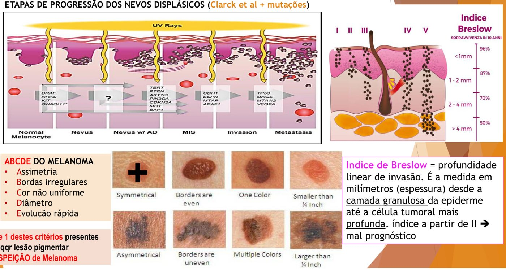
Microscopia do melanoma
- Fase inicial (radial): ninhos irregulares ou células neoplásicas atípicas isoladas intraepidérmicas, com resposta inflamatória na derme.
- Fase de progressão (vertical): agrupamentos de células atípicas infiltrantes, hipercromáticas, em ninhos/cordões, polimorfismo, intensa pigmentação, melanófagos/melanóforos, infiltrado inflamatório — e mitoses na "nossa cara".
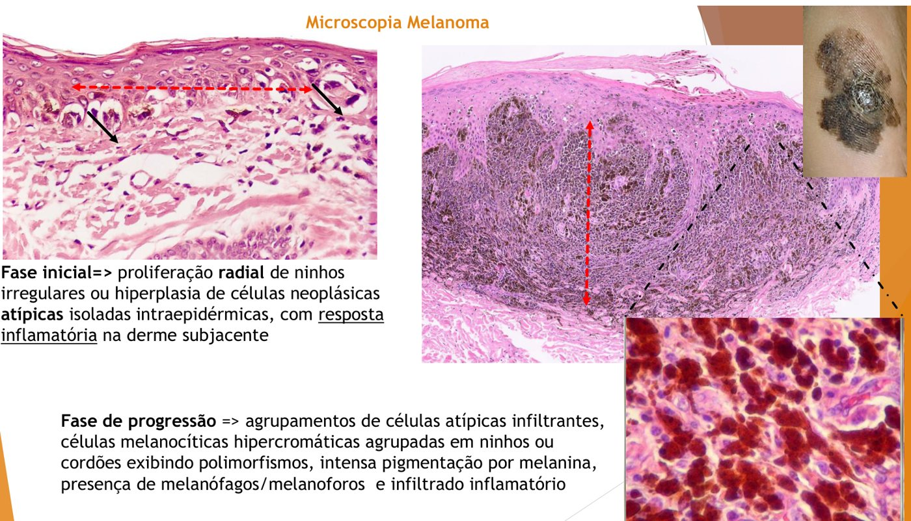
12 · Queratose e queilite actínica: as lesões pré-malignas
Queratose = aumento de queratina; actínica = do grego, sol. "Queratose pelo sol." Aqui saímos dos melanócitos: quem sofre o sol e responde com hiperqueratose são os queratinócitos — e esta lesão precede o carcinoma de células escamosas.
- Definição: ceratose com displasia causada por exposição crônica à radiação UV e a hidrocarbonetos (tabaco, agrotóxicos) e arsênicos industriais.
- Mais frequente em homens de pele clara, em áreas fotoexpostas; evolução lenta (anos); geralmente menor que 1 cm.
- Clínica: placas acastanhadas ou avermelhadas com hiperqueratose (escamas). No extremo, corno cutâneo — queratina acumulada que vira um "chifrinho" (não é raro no interior/zona rural). Não confunde com psoríase: a psoríase ocupa áreas maiores típicas (cotovelos, joelhos); a queratose está na área exposta ao sol.
Queilite actínica (a queratose do lábio)
- O lábio é semimucosa: padrão de epiderme, produz queratina — muito mais parecido com a pele que com a mucosa. No lábio não se forma corno cutâneo.
- O lábio inferior é o mais exposto: trabalhadores ao sol (construção civil, motoristas, trabalhadores rurais, camelôs) — homens também deveriam usar protetor labial.
- Clínica: lábio esbranquiçado (o vermelho substituído por queratina) e perda do contorno do vermelhão.
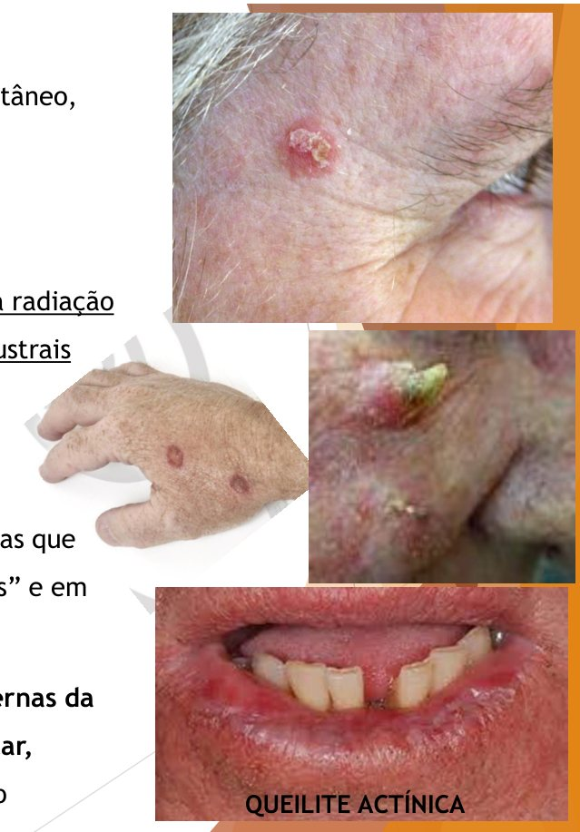
Microscopia: o grau de displasia é contado em terços
| Grau | Terços acometidos | Leitura |
|---|---|---|
| Displasia leve (baixo grau) | só a camada basal: pleomorfismo, perda de polaridade; o resto "está bonito" | não é câncer; afastar o fator (sol, tabaco), proteção, biópsia de controle |
| Displasia moderada | atinge o estrato intermediário, perda de arquitetura maior | já se pode remover/tratar |
| Displasia severa (alto grau) | alterações nos três terços — núcleos hipercromáticos até a superfície, sem células maduras em cima | pode ser tratada como carcinoma in situ |
- Descrição típica de laudo: hiperqueratose, queratinócitos atípicos (citoplasma róseo) nas camadas basal e suprabasal, hiperplasia de células basais, áreas de atrofia (adelgaçamento), junções celulares preservadas, infiltrado inflamatório crônico.
- E a derme? Também sofre: as fibras colágenas parecem "derretidas", degeneradas, basofílicas (azul-acinzentadas) — elastose solar, a assinatura do dano solar.
- Pergunta da aula: "isso não seria metaplasia, adaptação ao sol?" — Não. Metaplasia é reprogramação para outro tipo celular; aqui a célula continua sendo escamosa, só acumula dano.
- Variante citada no slide: queratoacantoma — tumor exuberante com capacidade de regressão.
- Precursoras não precisam "esperar progredir": biópsia; displasia moderada pode ser removida; existem antineoplásicos tópicos (pomadas como o imiquimode) que inibem a proliferação.
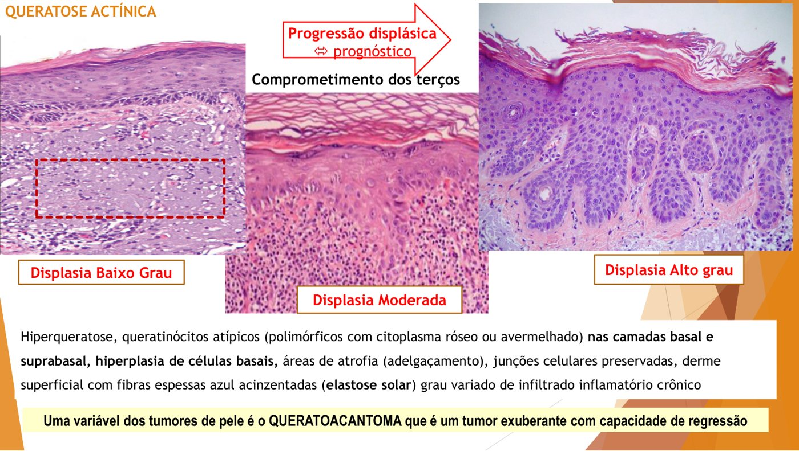
13 · Carcinoma basocelular × carcinoma de células escamosas
O que vale para todo câncer de pele
- Principal iniciador: radiação UV — cumulativa. Quem foi à praia antes dos 5 anos já tem queratinócitos mutados guardados; cada nova exposição soma.
- Assinatura do dano UV: inflamação, estresse oxidativo, EROs, dímeros de pirimidina, quebra da dupla-hélice, transições C→T. Mutação de p53 em ~60% dos basocelulares e ~40% dos escamosos.
- Fatores de risco: pele/olhos claros, albinismo, ruivos/louros, exposição laboral, regiões equatoriais; doenças genéticas como o xeroderma pigmentoso; imunossupressão; cicatrizes extensas (queimaduras — a regeneração repovoa queratinócitos, mas nem sempre melanócitos: a cicatriz fica clara e desprotegida); radioterapia prévia local; história familiar/pessoal.
- O câncer de pele é o mais frequente de todos, mas costuma ficar fora dos gráficos de câncer por homens/mulheres justamente porque mata pouco — quem mata é o melanoma.
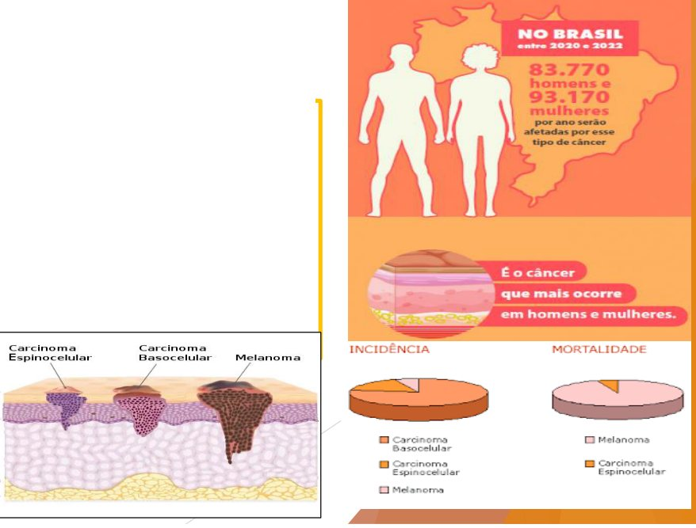
🎯 O raciocínio que explica a agressividade: de que camada vem a célula?
Basocelular = proliferação da camada basal — células que já são programadas para proliferar: precisam de poucas mutações para proliferar um pouco mais → crescimento lento, indolente, autolimitado. Escamoso = proliferação da camada espinhosa/intermediária — células diferenciadas, que não deveriam mais se dividir: para voltarem a proliferar "enlouquecidamente" precisam acumular muito mais mutações → mais agressivo, faz metástase.
| Carcinoma basocelular (CBC) | Carcinoma de células escamosas (CCE / epidermoide / espinocelular) | |
|---|---|---|
| Frequência | o mais comum | 2º mais comum; idade acima de 50 anos |
| Célula de origem | queratinócitos basais | queratinócitos da camada espinhosa |
| Patogenia | sol e carcinógenos (tabaco, fertilizantes) ativam a via hedgehog / mutação PTCH1; síndrome de Gorlin-Goltz (CBC nevoide, autossômica dominante, jovens) | igual + imunossupressão marcante (transplantados, HIV ~4× mais risco, LES); radioterapia prévia; geralmente progressão de lesão pré-maligna (queratose/queilite actínica, úlceras crônicas, cicatrizes) |
| Comportamento | lento, raramente metastatiza, recidivas comuns | mais frequente em homens; metástase ~5%; atenção à área H da face |
| Macro | pápulas/nódulos peroláceos (brilho) ou pigmentados, com telangiectasias; uni ou multifocais; ± úlcera | variada: placas eritematosas, úlceras crônicas (mais de 15 dias), nódulos de superfície escamosa/ulcerada — frequentemente sem dor |
| Micro | células basaloides uniformemente atípicas (núcleo ovalado, citoplasma escasso), paliçada periférica, ninhos, fibrose linear, infiltrado mononuclear moderado | atipia em toda a espessura (in situ / doença de Bowen) ou ninhos invadindo a derme "em gota" rompendo a membrana basal; disqueratose, pérolas córneas, necrose, mitoses atípicas |
| Tratamento | cirurgia com margem; raramente químio ou rádio — "tratado como benigno, mas é câncer" | cirurgia com margem + frequentemente quimio e radioterapia; laudo completo; oncologia |
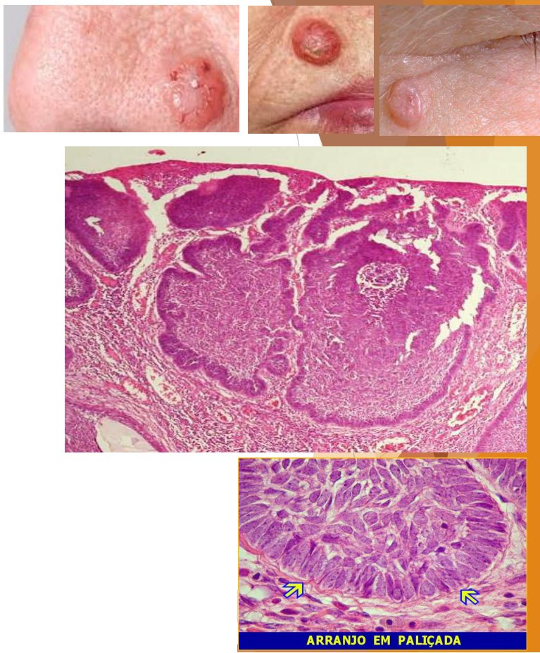
🎯 Telangiectasia na superfície = pense em neoplasia
Um nódulo normocrômico liso pode parecer inocente (como o nódulo perto da comissura labial do exercício). O detalhe que muda tudo: vasos subepidérmicos dilatados (telangiectasia) por cima. Foi um basocelular.
⚠️ Lesão crônica que não cicatriza e NÃO dói = suspeita
Processo inflamatório ativo dói — ferida, dermatite, tudo dói. Lesão que persiste, não cicatriza e não dói é substituição tecidual: suspeita de malignidade. O caso da aula: paciente com CCE de língua já extenso que continuava trabalhando em telemarketing, pouco preocupado, "porque não estava doendo". E na cavidade oral o CCE é ainda mais agressivo que na pele.
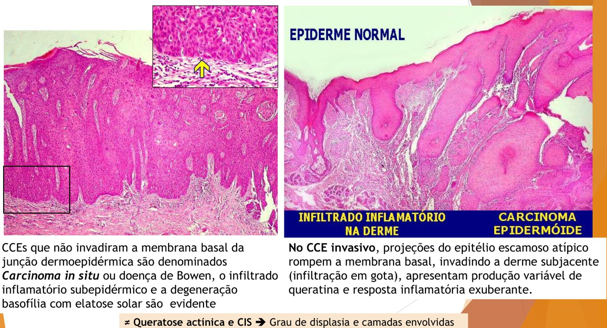
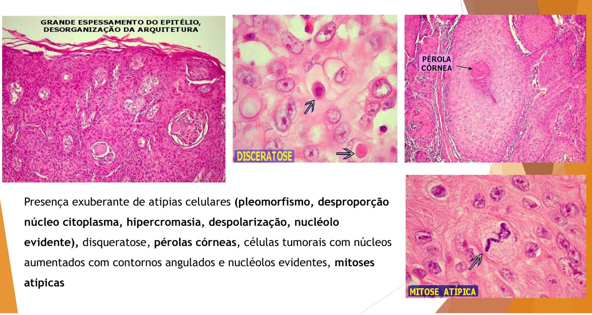
Bases do tratamento e o laudo
- Diagnóstico pelo dermatologista/cirurgião: exame clínico (dermatoscopia) + biópsia. A histopatologia confirma o tipo, o grau, as camadas acometidas e o risco de metástase (estadiamento), que define a extensão da cirurgia e a necessidade de biópsia do linfonodo sentinela. Imiquimode, radio ou quimioterapia adjuvantes podem ser usados. Quanto maior o estadiamento, maior a chance de cirurgia mutiladora (há casos em que se remove até o olho — reabilitação com prótese).
- Laudo de CBC pode vir enxuto ("só a conclusão") — é indolente e o tratamento é a remoção com margem. Hoje os CBC têm "nome e sobrenome" (nodular, superficial…).
- Laudo de CCE tem que vir completo: tipo (invasor), grau histológico, espessura tumoral, nível de invasão, ulceração, invasão vascular e perineural e margens. Margens comprometidas → completar o tratamento (oncologia).
- Prevenção: evitar exposição cumulativa (sol entre 10 h e 16 h), roupas, chapéu, óculos com proteção UV; filtro solar FPS acima de 30 contra UVA e UVB e protetor labial.
14 · Casos da aula e lâminas da prática
🩺 Caso 1 — bolhas no dorso que viram úlceras
Homem, 58 anos, procura a UBS com bolhas no dorso há 60 dias que estouram facilmente deixando úlceras cruentas e muito dolorosas. Diabético e hipertenso controlado, sem drogas novas nem alergias; COVID há 4 meses. Na última semana, lesões também na mucosa bucal. Já usou antibiótico e anti-inflamatório sem resposta. Conduta: hemograma, FAN e biópsia.
- Hipóteses: doença bolhosa — pênfigo (vulgar × foliáceo). Clinicamente não dá para separar com segurança (há vulgar com bolhas pequenas que estouram rápido). Reação a medicamento entraria, mas a história descartou drogas novas. Psoríase não faz bolha.
- Por que o FAN? Para incluir autoimunidade — veio reagente. Se fosse negativo, voltaria a investigar causa medicamentosa.
- O dado decisivo do laudo: acantólise SUPRABASAL com formação de bolha (acometendo também o epitélio folicular; bordas com reepitelização; conteúdo de fibrina) → pênfigo vulgar. Se a acantólise fosse subcórnea → pênfigo foliáceo. "Olha como é determinante."
🩺 Caso 2 — descamação no lábio que passou a doer
Homem leucoderma, 58 anos: há mais de 2 anos descamações recorrentes no lábio inferior; nos últimos 3 meses, dor, ardência e sangramento labial e perilabial. Trabalhou 15 anos na construção civil, ex-usuário de crack (abstinente há 2 anos), tabagista pesado (2 maços/dia), difícil adesão. Conduta: biópsia incisional + proteção solar e labial.
- Hipóteses clínicas: queilite (queratose) actínica — muito sugestiva — ou já carcinoma de células escamosas: não dá para descartar sem lâmina.
- O dado decisivo: laudo de queilite actínica com displasia LEVE → ainda longe de carcinoma, reversível: bom prognóstico, desde que afaste o sol e o tabaco.
- Observação da aula: na pesquisa citada, o tabaco se mostrou muito mais nocivo à mucosa do que o próprio crack.
🎯 Lâminas da aula prática
Duas lâminas de estudo: nevo melanocítico e carcinoma de células escamosas (CEC). Roteiro guiado por três perguntas: (1) que tecido estamos vendo (topografia — pele); (2) como é esse tecido quando normal (os terços da epiderme, derme papilar e reticular); (3) quais alterações morfológicas e celulares aparecem na área de lesão — treinar a escrita descritiva. No nevo: ninhos/cordões de células névicas na JDE e/ou derme, melanófagos, ausência de inflamação e de atipia. No CEC: atipias em toda a espessura, ninhos invasores na derme, disqueratose, pérolas córneas, mitoses atípicas, infiltrado inflamatório.
✅ Resumo rápido da aula
- Pele normal: epiderme avascular (por isso "dermatite") · terços basal / espinhoso (Malpighi) / superficial (granulosa, lúcida, córnea) · renovação 2–4 semanas · queratinócitos 90%, melanócitos 5% (todo mundo; muda a melanina, não o número) · 1 melanócito : 6–10 queratinócitos · crista epidérmica × papila dérmica · derme papilar × reticular · hipoderme = panículo.
- Lesões fundamentais: 5 mm separa mácula/mancha, pápula/nódulo, vesícula/bolha · placa precisa de tempo · nódulo é sólido, cisto tem líquido e epitélio · descrever "Em [topografia], apresenta [lesão] + características" · excisional (pequena, benigna) × incisional (grande, suspeita).
- Vocabulário: hiperqueratose, hipergranulose, acantose, papilomatose → placas/leucoplasia · hidrópica, espongiose, vacuolização → eritema · acantólise → bolha (a altura define) · exocitose · disqueratose → carcinoma · agudo = vasculoexsudativo; crônico = acantose.
- Dermatites agudas: eczema (Langerhans → CD4, tipo IV; espongiose → vesícula) · eritema multiforme (T citotóxico; drogas/herpes; simétrico, alvo, 7 dias; perivascular) · SSJ = forma sistêmica com mucosas, não é anafilaxia · impetigo (S. aureus, toxina anti-desmogleína 1, bolha subcórnea, crosta cor de mel).
- Psoríase: T CD4/CD8, TNF-α/IFN-γ · placas salmão com escamas pouco aderentes · Auspitz (atrofia suprapapilar + vasos tortuosos) · acantose em tubo de ensaio, hipogranulose, mitoses suprabasais, Munro · metotrexato/fototerapia/corticoide.
- Pênfigos: IgG anti-desmogleína · vulgar = Dsg3, suprabasal, bolha resistente, mucosa bucal primeiro, ~80% · foliáceo = Dsg1, subcórneo, "fogo selvagem", endêmico no Brasil · FAN apoia autoimunidade · imunossupressores.
- Benignas: pólipo fibroepitelial (eixo fibrovascular, macio, sem atipia; não é verruga/HPV) · acantose nigricans (fatores de crescimento; resistência insulínica; sem distúrbio metabólico → paraneoplásica).
- Melanocíticas: Clark — lentigo → juncional (mácula, JDE) → composto (pápula, derme, melanófagos) → displásico (atipia; síndrome: 50% aos 60 anos) → melanoma (radial → vertical) · melanoma 1–3% mas ~50% letal · ABCDE (mais de 1 = suspeita) · Breslow da granulosa à célula mais profunda.
- Carcinomas: queratose/queilite actínica = displasia contada em terços + elastose solar → CCE · CBC (basal, mais comum, perolado, telangiectasia, paliçada, raramente metastatiza) × CCE (espinhoso, mais mutações, imunossupressão, úlcera crônica sem dor, pérolas córneas, invasão em gota, metástase) · lâminas da prática: nevo melanocítico e CEC.
🧫 Resumão Pré-Prova — Dermatopatologia
Revisão da véspera · Anato Pato II · Aula 06 · só o que foi enfatizado em aula
- Epiderme avascular → toda inflamação é na derme → "dermatite", nunca "epidermite".
- Terços: basal (células-tronco, melanócitos, Merkel) · espinhoso ("Malpighi" em laudo antigo) · superficial = granulosa (querato-hialina) + lúcida + córnea (queratinócitos mortos + queratina). Renovação 2–4 semanas.
- Queratinócitos 90% (lábeis, fazem citocinas) · melanócitos 5% em TODOS (fototipo = quantidade de melanina, não de melanócitos) · Langerhans (apresentam antígeno) · Merkel (mecanorreceptora).
- 1 melanócito : 6–10 queratinócitos — melanócitos colados = alteração.
- Pele fina (pálpebra, 2 camadas) × grossa (palmoplantar) · crista epidérmica × papila dérmica (sanfona) · derme papilar × reticular · hipoderme = subcutâneo = panículo (paniculite).
- Funções: barreira seletiva, defesa imune, vitamina D (endócrina), sensorial, temperatura · Fitzpatrick I–VI.
| Até 5 mm | Acima de 5 mm | Característica |
|---|---|---|
| Mácula | Mancha / patch | sem relevo, só cor |
| Pápula | Nódulo (ou placa, se achatada) | elevação sólida |
| Vesícula | Bolha | elevação com líquido |
- Pústula = pus (piogênico) · crosta = massa seca (sangue/pus/soro) · erosão superficial (escoriação = linear) × úlcera total, expõe derme.
- Cisto = cavidade com líquido revestida por epitélio · escama = cornificação imperfeita · onicólise · papiloma (projeções digitiformes; HPV).
- Nódulo: base séssil (base maior que o nódulo) × pedunculada · exo/endofítico · móvel × fixo · superfície · consistência · lobulação · tamanho.
- Fórmula: "Em [topografia], apresenta [lesão] + características". Placa precisa de TEMPO (bolhas rompidas ≠ placa).
- Biópsia excisional = pequena e benigna (diagnóstico + tratamento) · incisional = grande ou suspeita de malignidade · quadro polimórfico → mais de uma amostra · mandar clínica + topografia.
| Termos | Significado | Clínica |
|---|---|---|
| Hiperqueratose · hipergranulose · acantose · papilomatose | córnea ↑ · granulosa ↑ · epiderme espessa (retifica cristas) · papilas ↑ | placa, lesão leucoplásica/hipocrômica, escama |
| Degeneração hidrópica · espongiose · vacuolização | edema intracelular · intercelular · vacúolos | lesão eritematosa/eritroplásica |
| Acantólise | perda de junções (desmossomos/desmogleínas) | vesícula/bolha — a altura dá o diagnóstico |
| Exocitose | célula inflamatória dentro da epiderme | dermatites |
| Disqueratose | queratinização abaixo da granulosa; pérola córnea | carcinoma |
| Atrofia | menos células espinhosas, epiderme fina e retificada | pele fina, avermelhada |
- Acantose em fototipo alto → hipercrômica · amarelo → gordura/xantoma · roxo → vasculopatia.
- Agudo = vasculoexsudativo (espongiose, acantólise, vesícula) · crônico = formação tecidual (acantose, mais de 4 semanas) + mononucleares. Dermatite (aguda) × dermatose (crônica, condição: controle, não cura).
| Eczematosa | Eritema multiforme | Impetigo | |
|---|---|---|---|
| Mecanismo | Langerhans → T CD4 · hipersensibilidade tipo IV · queratinócitos liberam citocinas | T citotóxicos destroem queratinócitos (hipersensibilidade autolimitada) | S. aureus: toxina cliva desmogleína 1 |
| Gatilho | contato irritativo (fralda, sabão em pó), alérgica (bijuteria, látex), fármacos, atópica (interna) | sulfonamidas, penicilinas, barbitúricos, hidantoínas · herpes simples, Mycoplasma, Histoplasma | contato direto/objetos · 1ª infância |
| Clínica | pápula → vesícula/bolha → úlcera → crosta | simétrico, multiforme, lesões em alvo, ~7 dias | mácula → vesícula → pústula → crosta cor de mel |
| Micro | espongiose, acantólise espinhosa, exocitose, infiltrado misto | infiltrado linfocitário perivascular superficial, apoptose/necrose epidérmica | neutrófilos sob a córnea · bolha subcórnea |
| Tto | afastar agente + corticoide | sintomático (SSJ: corticoide) | antibiótico |
- HLA/MHC → T CD4/CD8 → sopa de TNF-α + IFN-γ → fatores de crescimento → hiperproliferação + hiperqueratose. ~2% no Brasil · sem cura · reagudiza · artralgia, febre · associação com LES.
- Cotovelos, joelhos, couro cabeludo, lombossacral, interglúteo · onicólise ~30% · vulgar = mais comum.
- Placas bem demarcadas, róseas/salmão, escamas branco-acinzentadas pouco aderentes.
- Auspitz: tira a escama → pontilhado hemorrágico. Psoríase faz, líquen não (sugestivo). Por quê: atrofia suprapapilar com vasos dilatados/tortuosos colados na superfície.
- Micro: acantose em tubo de ensaio (alongamento tubular das cristas) · hipogranulose · hiperparaqueratose · mitoses acima da basal · adelgaçamento suprapapilar · microabscessos de Munro (neutrófilos, não infecção) · infiltrado linfocítico.
- Tto: metotrexato, fototerapia, corticoide tópico.
| Pênfigo vulgar | Pênfigo foliáceo | Penfigoide bolhoso (citado) | |
|---|---|---|---|
| Alvo | IgG anti-Dsg 3 (basal) | IgG anti-Dsg 1 (superficial) | hemidesmossomos |
| Bolha | SUPRABASAL · resistente | SUBCÓRNEA · estoura fácil | subepidérmica |
| Clínica | ~80% · corpo todo · mucosa bucal primeiro · rompe → quase úlcera · pode ser fatal | "fogo selvagem" · endêmico no Brasil (Norte) · couro cabeludo, face, tórax · erosões e crostas | idosos, mais localizado |
- Autoimunes, crônicas, 4ª–6ª década · biópsia é crucial · FAN (inespecífico, sugere autoimune) · imunofluorescência · Nikolsky · imunossupressores.
- Epidermólise bolhosa = genética ("crianças borboleta").
- Pólipo fibroepitelial (acrocórdon): epitélio prolifera e arrasta conjuntivo · idosos/meia-idade, assintomático, sangra se arrancado · pescoço, tronco, face, dobras · exofítico, pediculado, liso, macio/fibroelástico (pétreo não é) · micro: eixo fibrovascular + escamoso benigno sem atipia · ≠ verruga (HPV, papilomatosa).
- Acantose nigricans: neoplasia sem nódulo · ↑ sinalização de fatores de crescimento → queratinócitos ↑ → melanócitos mais densos (sem hiperplasia melanocítica) · axila, pescoço, virilha · mancha enegrecida, difusa, aveludada · resistência insulínica/obesidade/DM (~80%) · sem distúrbio metabólico → investigar paraneoplásica · tto = regulação endócrina.
- Melasma = hipermelanose focal sem hiperplasia melanocítica (face, mulheres) · vitiligo = acromia adquirida, imune contra melanócitos · lentigo = hiperplasia lentiginosa (mais melanócitos, sem doença).
- Clark: UV → lentigo → (NRAS/BRAF) juncional (mácula, JDE) → composto (pápula/nódulo, derme, maturação, melanófagos) → displásico (atipia; CDK4, TERT) → melanoma (radial → vertical). Funil: pouquíssimos progridem.
- Nevo típico: margens bem definidas, contorno e pigmentação uniformes, sem inflamação · subtipos: azul, Spitz (crianças), halo, congênito.
- Nevo displásico: maior, cor irregular, margem irregular, centro elevado pedregoso e escuro · também em área não exposta · síndrome do nevo displásico: ~50% melanoma aos 60 anos · micro: atipia + infiltrado linfocitário + fibrose linear.
- Melanoma: 1–3% dos CAs de pele ("nem 1/3 de fatia"), ~50% letal · TERT, PTEN, KIT, CDKN2A · menos de 10% herdado · dorso (H) / pernas (M) · extensivo superficial (mais comum), nodular, lentiginoso acral · usualmente acima de 6 mm.
- ABCDE: assimetria, bordas, cor, diâmetro, evolução — mais de 1 critério = suspeita.
- Breslow: mm da camada granulosa à célula tumoral mais profunda · aula: 2–4 mm ≈70% · acima de 4 mm ≈50% de sobrevida.
- Queratose actínica: displasia por UV (+ tabaco, agrotóxicos, arsênico) · homens de pele clara · placas acastanhadas/avermelhadas com escamas · corno cutâneo · no lábio = queilite actínica (esbranquiçado, perde contorno) → precursoras do CCE.
- Grau pelos terços: leve = basal · moderada = até o intermediário · severa = 3 terços (≈ in situ) · derme com elastose solar (colágeno basofílico = assinatura do sol) · não é metaplasia · tópico: imiquimode.
- UV cumulativo · dímeros de pirimidina, C→T · p53 · risco: pele clara, albinismo, xeroderma pigmentoso, imunossupressão, cicatriz de queimadura, radioterapia.
| Basocelular | Células escamosas | |
|---|---|---|
| Origem | camada basal (já prolifera → poucas mutações) | camada espinhosa (diferenciada → muitas mutações) |
| Frequência | 1º (≈5 fatias da pizza) | 2º, acima de 50 anos |
| Clínica | pápula/nódulo perolado + telangiectasia | placa, úlcera crônica (mais de 15 dias) sem dor, nódulo escamoso/ulcerado |
| Micro | basaloides em paliçada, fibrose linear | in situ (Bowen) ou invasão em gota, pérolas córneas, disqueratose, mitoses atípicas |
| Extra | hedgehog/PTCH1 · Gorlin-Goltz · raramente metastatiza | imunossupressão (transplante, HIV ~4×) · metástase ~5% · área H · boca é pior |
| Tto / laudo | cirurgia com margem; laudo pode ser enxuto | cirurgia + quimio/rádio; laudo completo (grau, espessura, invasão, ulceração, margens) |
- Prevenção: evitar 10–16 h · FPS acima de 30 UVA/UVB · protetor labial.
- Bolhas no dorso + mucosa bucal, sem resposta a ATB → pênfigo · FAN para incluir autoimunidade (reagente) · laudo: acantólise suprabasal = vulgar (subcórnea seria foliáceo).
- Lábio inferior descamando há 2 anos, trabalhador ao sol, tabagista → HDs queilite actínica × CCE · biópsia incisional · laudo: displasia leve → reversível, bom prognóstico.
- Lâminas da prática: nevo melanocítico e CEC · roteiro: (1) que tecido · (2) como é o normal · (3) quais alterações (escrita descritiva).
- Pápula (sólida) ≠ vesícula (líquido) · nódulo (sólido) ≠ cisto (líquido + epitélio).
- Erosão (parcial) ≠ úlcera (total, expõe derme).
- Acantose (espessamento) ≠ acantólise (perda de junções → bolha).
- Degeneração hidrópica (edema dentro da célula) ≠ espongiose (edema entre as células).
- Vulgar (Dsg3, suprabasal) ≠ foliáceo (Dsg1, subcórnea) ≠ penfigoide (subepidérmica).
- Impetigo (toxina bacteriana contra Dsg1) ≠ foliáceo (autoanticorpo contra Dsg1) — mesma altura, causas diferentes.
- Eritema multiforme/SSJ ≠ anafilaxia.
- Psoríase (Auspitz +, Munro) ≠ líquen (placa escamosa, Auspitz −).
- Melasma (mais melanina) ≠ lentigo (mais melanócitos) ≠ vitiligo (sem melanócitos) ≠ acantose nigricans (melanócitos mais densos por proliferação de queratinócitos).
- Pólipo fibroepitelial (liso, macio) ≠ verruga (HPV, verruciforme).
- Melanoma: mais famoso e mais letal, mas o menos frequente; o mais frequente é o basocelular.
- "-oma" no melanoma não quer dizer benigno.
Banco de Questões — Dermatopatologia
Anato Pato II · Aula 06 · estilo ENADE/residência.